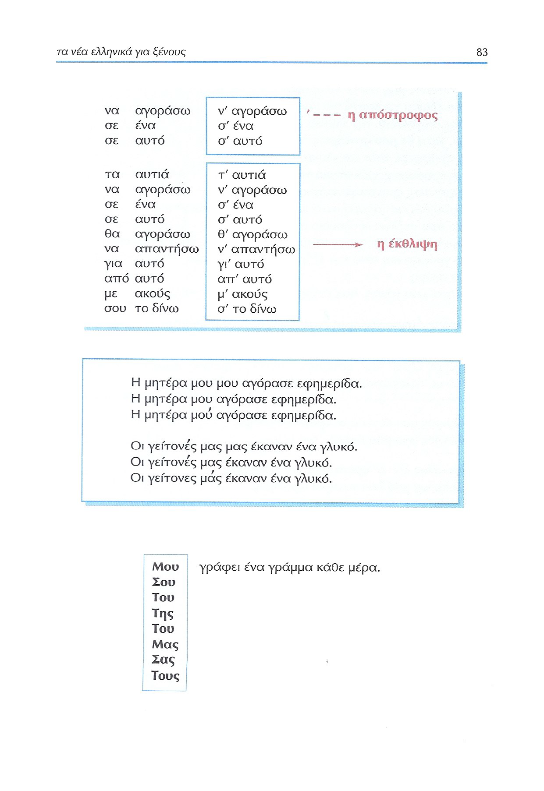
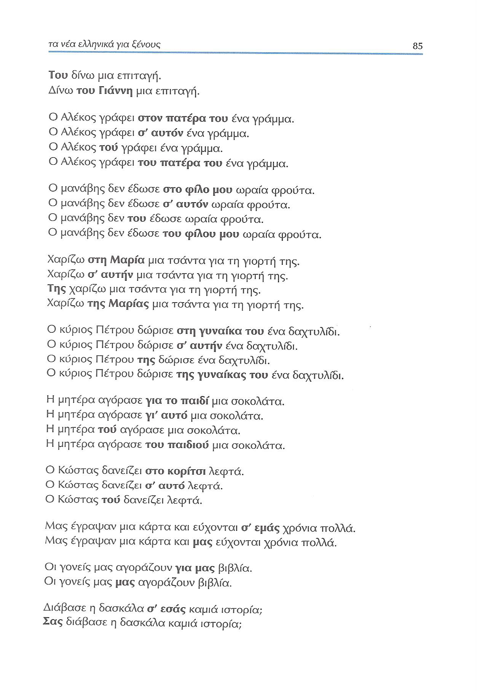
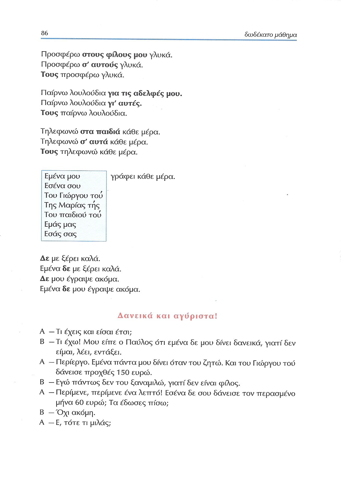
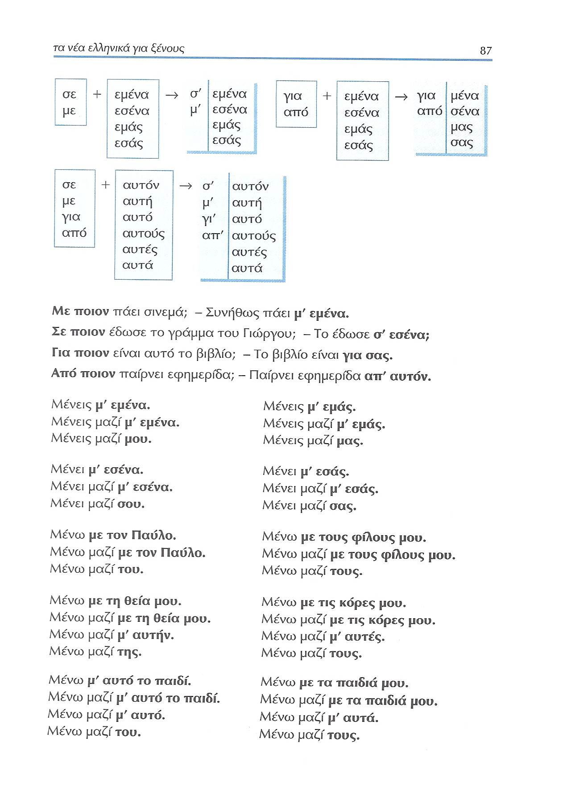
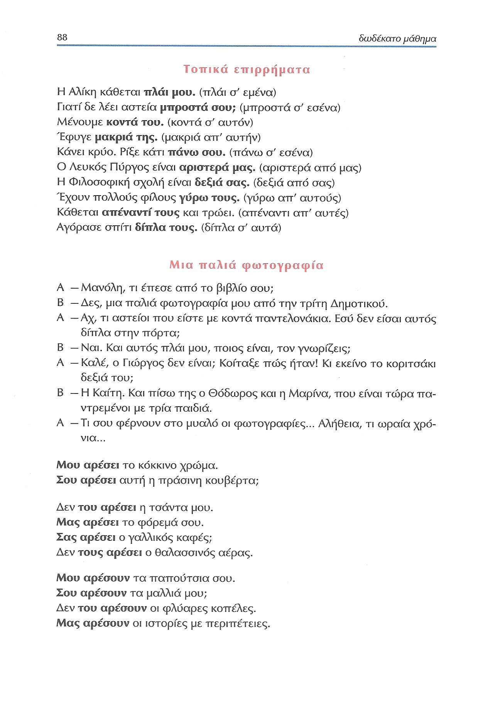
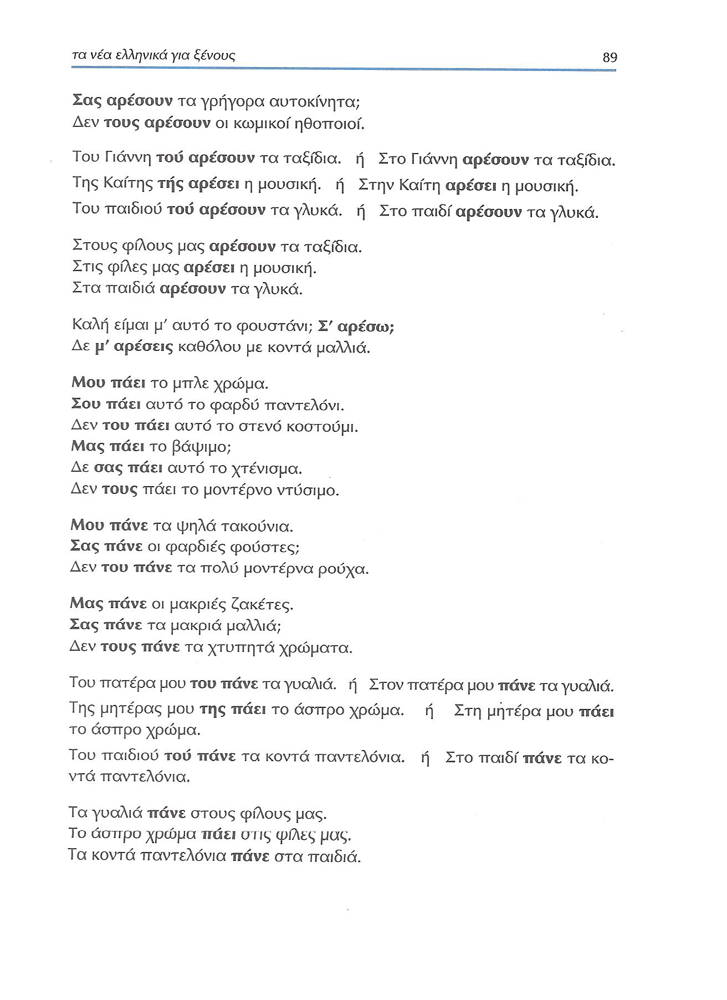
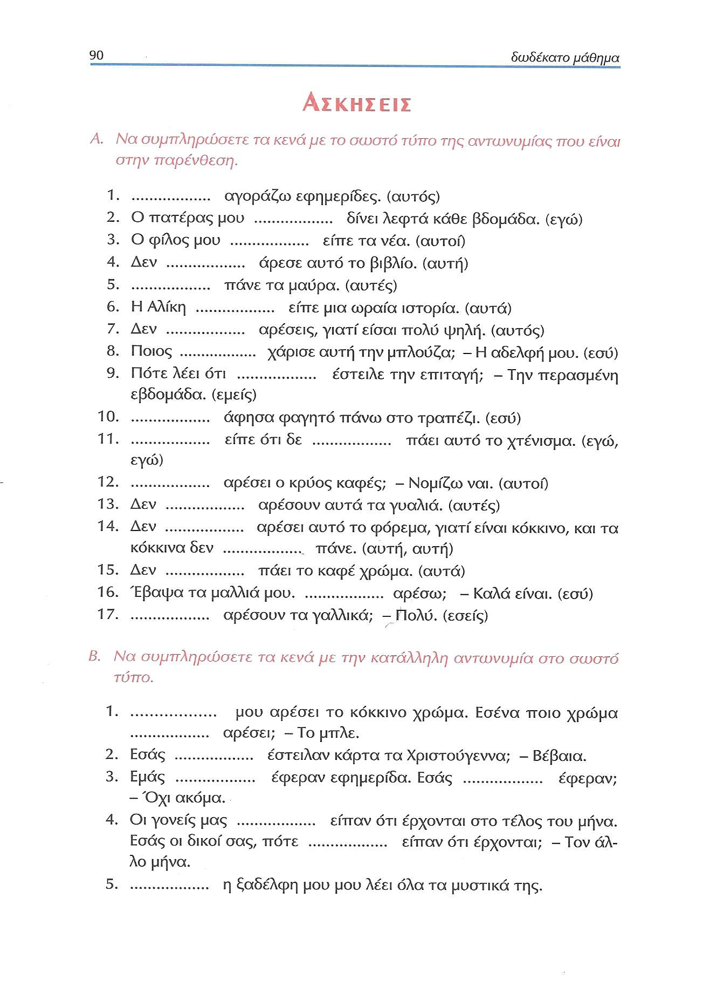
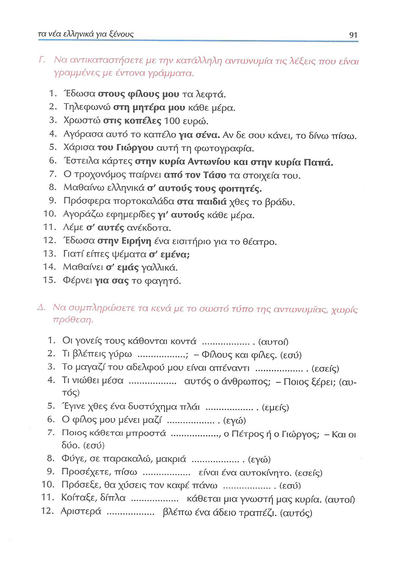

Lección 12¶
82: 'Στην αγορά'¶

83: Elisión/genitivo posesivo/indirecto¶

| Sujeto | CI | Verbo | Otros |
|---|---|---|---|
| Η μητέρα μου | μου | αγόρασε | εφημερίδα. |
| Η μητέρα μου | αγόρασε | εφημερίδα. | |
| Η μητέρα | μού | αγόρασε | εφημερίδα. |
84: Objeto (in)directo¶

Formas del CI¶
| EJEMPLO | Clít. gen. | σε+ ac. | για + ac. | SN gen. |
|---|---|---|---|---|
| Ο αδελφός µου έστειλε σ' εμένα ένα δώρο | + | |||
| Ο αδελφός µου µου έστειλε ένα δώρο. | + | |||
| .......... | Clít. gen. | σε+ ac. | για + ac. | SN gen. |
| Ο δάσκαλος λέει σ' εμένα να είµαι φρόνιµος | + | |||
| Ο δάσκαλος μού λέει να είμαι φρόνιµος | + | |||
| .......... | Clít. gen. | σε+ ac. | για + ac. | SN gen. |
| Η Καίτη παίρνει για µένα τσιγάρα | + | |||
| Η Καίτη μού παίρνει τσιγάρα | + | |||
| .......... | Clít. gen. | σε+ ac. | για + ac. | SN gen. |
| Η Νίκη έγραψε σ' εσένα δύο γράµµατα | + | |||
| Η Νίκη σού έγραψε δύο γράµµατα | + | |||
| .......... | Clít. gen. | σε+ ac. | για + ac. | SN gen. |
| Η αδελφή σου φέρνει για σένα πολλά δώρα | + | |||
| Η αδελφή σου σου φέρνει πολλά δώρα | + | |||
| .......... | Clít. gen. | σε+ ac. | για + ac. | SN gen. |
| Δίνω στο Γιάννη µια επιταγή | + | |||
| Δίνω σ' αυτόν µια επιταγή | + | |||
| Του δίνω µια επιταγή | + | |||
| Δίνω του Γιάννη µια επιταγή | + | + | ||
| .......... | Clít. gen. | σε+ ac. | για + ac. | SN gen. |
| Ο Αλέκος γράφει στον πατέρα του ένα γράμμα | + | |||
| Ο Αλέκος γράφει σ' αυτόν ένα γράµµα | + | |||
| Ο Αλέκος τού γράφει ένα γράµµα | + | |||
| Ο Αλέκος γράφει του πατέρα του ένα γράµµα | + | |||
| .......... | Clít. gen. | σε+ ac. | για + ac. | SN gen. |
| Ο µανάβης δεν έδωσε στο φίλο µου ωραία φρούτα | + | |||
| Ο µανάβης δεν έδωσε σ' αυτόν ωραία φρούτα | + | |||
| Ο µανάβης δεν του έδωσε ωραία φρούτα | + | |||
| Ο µανάβης δεν έδωσε του φίλου µου ωραία φρούτα | + | |||
| .......... | Clít. gen. | σε+ ac. | για + ac. | SN gen. |
| Χαρίζω στη Μαρία µια τσάντα για τη γιορτή της | + | |||
| Χαρίζω σ' αυτήν µια τσάντα για τη γιορτή της | + | |||
| Της χαρίζω µια τσάντα για τη γιορτή της | + | |||
| Χαρίζω της Μαρίας µια τσάντα για τη γιορτή της | + | |||
| .......... | Clít. gen. | σε+ ac. | για + ac. | SN gen. |
| Ο κύριος Πέτρου δώρισε στη γυναίκα του ένα δαχτυλίδι | + | |||
| Ο κύριος Πέτρου δώρισε σ' αυτήν ένα δαχτυλίδι | + | |||
| Ο κύριος Πέτρου της δώρισε ένα δαχτυλίδι | + | |||
| Ο κύριος Πέτρου δώρισε της γυναίκας του ένα δαχτυλίδι | + | |||
| .......... | Clít. gen. | σε+ ac. | για + ac. | SN gen. |
| Η µητέρα αγόρασε για το παιδί µια σοκολάτα | + | |||
| Η μητέρα αγόρασε γι' αυτό µια σοκολάτα | + | |||
| Η μητέρα τού αγόρασε µια σοκολάτα | + | |||
| Η μητέρα αγόρασε του παιδιού µια σοκολάτα | + | |||
| .......... | Clít. gen. | σε+ ac. | για + ac. | SN gen. |
| Ο Κώστας δανείζει στο κορίτσι λεφτά | + | |||
| Ο Κώστας δανείζει σ' αυτό λεφτά | + | |||
| Ο Κώστας τού δανείζει λεφτά | + | |||
| .......... | Clít. gen. | σε+ ac. | για + ac. | SN gen. |
| Μας έγραψαν µια κάρτα και εύχονται σ' εµάς χρόνια πολλά | + | |||
| Μας έγραψαν µια κάρτα και µας εύχονται χρόνια πολλά | + | |||
| .......... | Clít. gen. | σε+ ac. | για + ac. | SN gen. |
| Οι γονείς µας αγοράζουν για µας βιβλία | + | |||
| Οι γονείς µας µας αγοράζουν βιβλία | + | |||
| .......... | Clít. gen. | σε+ ac. | για + ac. | SN gen. |
| Διάβασε η δασκάλα σ' εσάς καµιά ιστορία; | + | |||
| Σας διάβασε η δασκάλα καμιά ιστορία; | + | |||
| .......... | Clít. gen. | σε+ ac. | για + ac. | SN gen. |
| Προσφέρω στους φίλους µου γλυκά | + | |||
| Προσφέρω σ' αυτούς γλυκά | + | |||
| Τους προσφέρω γλυκά | + | |||
| .......... | Clít. gen. | σε+ ac. | για + ac. | SN gen. |
| Παίρνω λουλούδια για τις αδελφές µου. | + | |||
| Παίρνω λουλούδια γι' αυτές | + | |||
| Τους παίρνω λουλούδια | + | |||
| .......... | Clít. gen. | σε+ ac. | για + ac. | SN gen. |
| Τηλεφωνώ στα παιδιά κάθε µέρα | + | |||
| Τηλεφωνώ σ' αυτά κάθε µέρα | + | |||
| Τους τηλεφωνώ κάθε μέρα | + | |||
| .......... | Clít. gen. | σε+ ac. | για + ac. | SN gen. |
85: Objeto (in)directo¶

86: OI/reduplicación de clítico¶

Reduplicación de clítico¶
En griego el pronombre clítico en genitivo puede repetir el CI expresado (i) por un pronombre tónico en genitivo (εμένα, εσένα, εμάς, εσάς, etc.) o (ii) por un SN en genitivo (του Γιώργου, της Μαρίας, του παιδιού), cuando se coloca en posición inicial de oración, como en español.
| PERSONA | Pron. tónico | Pron. átono |
|---|---|---|
| 1ª sg. | (ε)μένα (a mí) | μου (me) |
| 2ª sg. | (ε)σένα (a ti) | σου (te) |
| 3ª sg. masc. | αυτού (a mí) | του (le) |
| 3ª sg. fem. | αυτής (a mí) | της (le) |
| 3ª sg. neu. | αυτού (a mí) | του (le) |
| o-o | o-o | o-o |
| 1ª pl. | (ε)μας (a nosotros) | μας (mas) |
| 2ª pl. | (ε)σας (a vosotros) | σας (os) |
| 3ª pl. m/f/n | αυτών (a ellos) | τους (les) |
| EJEMPLO | Pron/SN gen. | Clít. gen. | σε+ac. | για+ac. | SN gen. |
|---|---|---|---|---|---|
| Εμένα µου γράφει κάθε µέρα | + | + | |||
| Εσένα σου γράφει κάθε µέρα | + | + | |||
| Του Γιώργου τού γράφει κάθε µέρα | + | + | |||
| Της Μαρίας τής γράφει κάθε µέρα | + | + | |||
| Του παιδιού τού γράφει κάθε µέρα | + | + | |||
| Εμάς µας γράφει κάθε µέρα | + | + | |||
| Εσάς σας γράφει κάθε µέρα | + | + | |||
| ............................ |
Orden¶
Como en español, (i) el clítico va entre la negación y el verbo, (ii) mientras que la forma tónica precede a la negación, tanto en el caso del CD como del CI.
| EJEMPLO | Pron/SN gen. | Negación | Clítico | Verbo | Otros |
|---|---|---|---|---|---|
| Δε µε ξέρει καλά | Δε | µε | ξέρει | καλά | |
| Εμένα δε µε ξέρει καλά | Εμένα | δε | µε | ξέρει | καλά |
| Δε µου έγραψε ακόµα | Δε | µου | έγραψε | ακόµα | |
| Εμένα δε µου έγραψε ακόµα | Εμένα | δε | µου | έγραψε | ακόµα |
Σ' εσένα μιλώ: μ' ακούς; Σου μιλώ' μ' ακούς;
Ο µανάβης δεν του έδωσε ωραία φρούτα
87: Elisión en preposiciones¶

| Pronombre | σε | με | για | από |
|---|---|---|---|---|
| εμένα | σ' εμένα | μ' εμένα | για μένα | από μένα |
| εσένα | σ' εσένα | μ' εσένα | για σένα | από σένα |
| εμάς | σ' εμάς | μ' εμάς | για μάς | από μάς |
| εσάς | σ' εσάς | μ' εσάς | για σάς | από σάς |
| αυτόν | σ' αυτόν | μ' αυτόν | γι' αυτόν | απ' αυτόν |
| αυτή | σ' αυτή | μ' αυτή | γι' αυτή | απ' αυτή |
| αυτό | σ' αυτό | μ' αυτό | γι' αυτό | απ' αυτό |
| αυτούς | σ' αυτούς | μ' αυτούς | γι' αυτούς | απ' αυτούς |
| αυτές | σ' αυτές | μ' αυτές | γι' αυτές | απ' αυτές |
| αυτά | σ' αυτά | μ' αυτά | γι' αυτά | απ' αυτά |
88: Adverbios/diálogo/μ᾽αρέσει¶
Minuto 1:49

Adverbios => preposiciones (compuestas)¶
| Adverbio | Adv + SP | Adv + SP | Adv + clítico gen. |
|---|---|---|---|
| Esp. lejos | lejos de Pedro | lejos de él | |
| Gr. μακριά | μακριά από τον Πέτρο | μακριά απ' αυτόν | μακριά του |
| Esp. cerca | cerca de Pedro | cerca de él | |
| Gr. κοντά | κοντά στον Πέτρο | κοντά σ' αυτόν | κοντά του |
| EJEMPLO | Adv + clítico (gen) | Prep (από/σε) + tónico | Prep (από/σε) + SN |
|---|---|---|---|
| Η Αλίκη κάθεται | πλάι µου | πλάι σ' εμένα | πλάι στον Πέτρο |
| Γιατί δε λέει αστεία | μπροστά σου; | μπροστά σ' εσένα | μπροστά στον Πέτρο |
| Μένουμε | κοντά του | κοντά σ' αυτόν | κοντά στον Πέτρο |
| Έφυγε | μακριά της | μακριά απ' αυτήν | μακριά από τον Πέτρο |
| Κάνει κρύο. Ρίξε κάτι | πάνω σου | πάνω σ' εσένα | πάνω στο κεφάλι σου |
| Ο Λευκός Πύργος είναι | αριστερά μας | αριστερά από μας | αριστερά από τον Πέτρο |
| Έχουν πολλούς φίλους | γύρω τους | γύρω απ' αυτούς | γύρω απ' τους φοιτητές |
| Κάθεται | απέναντί τους | απέναντι απ' αυτές | απέναντι από τους φοιτητές |
| Αγόρασε σπίτι | δίπλα τους | δίπλα σ' αυτά | δίπλα στους φίλους του |
89: μ'αρέσει/μου πάει¶

90: Ejercicios¶

91: Ejercicios¶

92: Expresiones idiomáticas¶